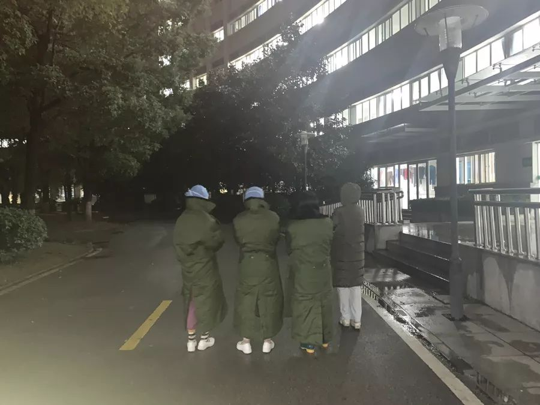

独家 | 第二批上海援鄂医疗队在重症病房的第一天：科学有序准备好持久战
原文链接 备份链接 “一百多人来自上海不同的医院，大家首先要内部磨合，我们的医护人员还要与武汉当地医护人员磨合。我们计划用3-5天来完成磨合，然后科学分配，提高工作效率。” 文 | 黄 祺 今日全国新冠肺炎确诊人数过万，武汉的重症患者还在 …
王海红
（上海市第一批支援湖北医疗队队员、上海市奉贤区中心医院护师）
2月16日，武汉，天气阴。
昨日的武汉，下了一天的雪。雪花漫天飞舞，飘飘洒洒，天灰蒙蒙的，烟雾缭绕。
我顺手在窗外拍了一张雪景的照片，武汉下雪了，不知道上海下雪了没有？不知道远方的亲人衣服多穿了没有？夜里睡觉的时候被子冷不冷？

王海红和同事们。本文图片均为王海红提供
医疗队微信群里发布了好几条气温骤降的信息，提醒队员们一定要注意防寒保暖。我是凌晨0点到4点的班，乖乖地提前穿好了队里发的军大衣，把自己严严实实地包裹起来。
23时到大厅集合的时候，武汉当地的志愿者司机已经等在门口了。司机大哥大老远赶来，把我们送到医院后，又匆匆赶回家，明天还要早起上班。总有那么些人，在默默地付出和奉献，这个社会还是好人多啊！
医院的雪景
凌晨的气温降到了0℃以下，是来到武汉至今最冷的天气了。我里面穿了秋衣秋裤，加上一身手术衣裤。脱掉军大衣，先穿上护士服，接着穿隔离衣，最后穿防护服，里里外外一共五层，瞬间感觉自己像个玉米似的。
头面部则有过之而无不及。N95口罩、帽子、隔离衣帽子、护目镜、防护服帽子、护面屏，每一层都紧紧地箍在头上，感觉自己像是西游记里被戴了紧箍咒的孙悟空，凭着一身本领去驱妖降魔。

有积雪的路牌
好在我们的班上，一切平稳，患者们都安然入睡，我们默默地守护着！
（澎湃新闻见习记者 陈少颖 整理）
本期编辑 常琛
推荐阅读


原文链接 备份链接 “一百多人来自上海不同的医院，大家首先要内部磨合，我们的医护人员还要与武汉当地医护人员磨合。我们计划用3-5天来完成磨合，然后科学分配，提高工作效率。” 文 | 黄 祺 今日全国新冠肺炎确诊人数过万，武汉的重症患者还在 …
原文链接 备份链接 那天我在金银潭医院交完货，已经是晚上六点。我这才想起来，原来已经整整24个小时没吃饭了。路上连水都没怎么喝，也没觉得饿，人忙起来的时候感觉不到饿。 口述 | 宋 华 整理 | 王仲昀 来武汉半个多月，前天（2月14日） …
原文链接 备份链接 提前启动、提前统筹，就能节省很多时间，时间就是生命 *文 | 胡雯* 疫情爆发后，国内医疗资源迅速告急，防护服、口罩等关键物资缺口巨大，众多企业、NGO和个人第一时间开启全球大采购和捐赠，但却遭遇重重困难。 一连串问题 …
原文链接 备份链接 封面报道之治理篇： 鄂州：考验疫区网格员 | 咸宁：接送病人在路上 | 襄阳：最后的出口 | 潜江：汪洋中的一条船 2月11日晚上11点半，湖北省孝感市孝南区某乡镇卫生院副院长赵明（化名），才从隔离病房里出来，消毒、回 …
原文链接 备份链接 除了牛奶和饼干，司机的后座上常会捡到医生和护士们留下的礼物，有时候是一罐八宝粥，或者一枚珍贵的N95口罩。 文 | 林秋铭 编辑 | 金匝 1 如果没有这场疫情，今年春节，52岁的李明和他的妻子将会出现在希腊。这是他和 …